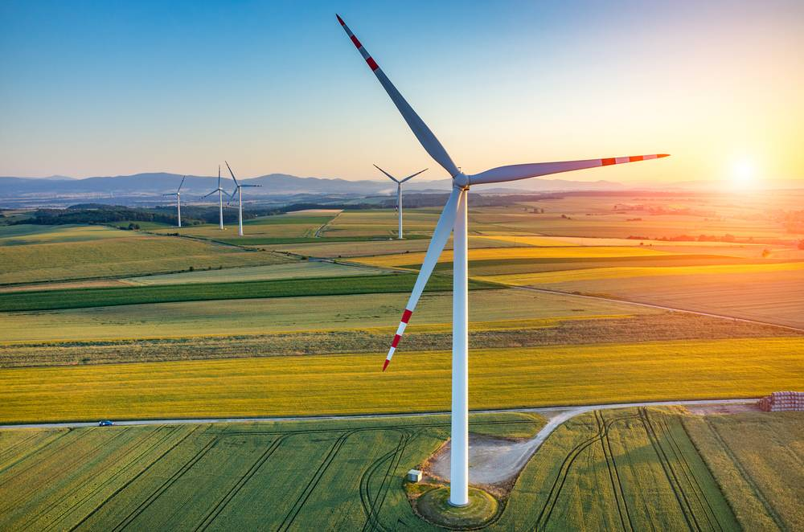

Advantages Wind Mills
Advantages. Wind power stations have the advantage over fossil fuel power stations as they do not produce
any greenhouse gases such as carbon dioxide or water vapour. They also do not produce gases that helps to
make acid rain such as sulphur dioxide. They also make the environment safer and less pollution is caused.
Homesteaders, farmers, and ranchers were no longer dependent on natural water as they could drill wells and
pump water. Windmills were often among a homesteader's most prized possessions. The water pumped by windmills
was used to cook, bathe, drink, water crops and animals, wash clothes, and more.
Windmills may be used to grind grain into flour, to pump water, or to produce electricity. A windmill has
a number of blades that spin around when wind blows on them.
The most important use of the windmill was for grinding grain. In certain areas its uses in land drainage and water
pumping were equally important. The windmill has been used as a source of electrical power since P. La Cour's mill,
built in Denmark in 1890 with patent sails and twin fantails on a steel tower.
1) It generates the Electricity.
2) It is an air pollution-less process to generate electricity.
3) Economical and less place consuming Energy.
4) Does not result in any acid rains.
5) Do not result in the Greenhouse effect.
6) It does not pollute either water or air in generating the electricity..
